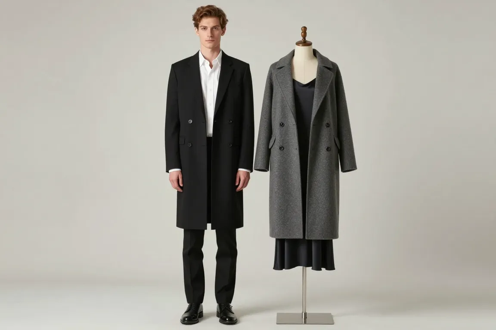

Минимализм в моде
мода · 1990–2000 · также: Минимализм 1990-х, Мода чистой линии, Предельно простое платье
Простая тихая одежда 1990-х. Чистые линии, тонкая ткань серого, чёрного и белого цвета, ни логотипа, ни отделки, и крой, который делает всю работу.

Главная идея
После шоу 1980-х одежда становится простой: идеальный крой из тонкой ткани не нуждается в орнаменте.
Принципы дизайна
- Кройте каждую вещь с минимумом швов, который допускает тело.
- Убирайте любую отделку, логотип, клапан кармана и лишнюю пуговицу, не имеющие применения.
- Выбирайте тонкую плотную ткань: шерсть, шёлковый крепдешин, поплин и кашемир.
- Держите палитру в чёрном, белом, сером, тёмно-синем и верблюжьем.
- Кройте прямую длинную линию: узкие брюки, длинный жакет и платье-колонну.
- Прячьте шов и подборт и отделывайте изнанку так же чисто, как лицо.
- Держите плечо естественным, без подплечника.
Антипаттерны
- Широкие подбитые плечи
- Логотип или монограмма
- Рюши, кружево и пайетки
- Смелый принт и сильный цвет
- Видимая фурнитура и отделка
- Суетливый многослойный комплект
Палитра
Родословная
- Перекликается с
- Clean girl, Минимализм, Минимализм в вебе, Минималистичный интерьер, Нормкор
- Развился из
- Глэмур косого кроя
- Развился в
- Тихая роскошь в моде, Аксессуар скрытой роскоши
- Скрещивается с
- Японский авангард в моде
- Вызвал реакцию
- Горпкор
- Бунт против
- Пауэр-дрессинг
Использовать
SKILL.md · tokens.css · исходный JSON · открыть в демо